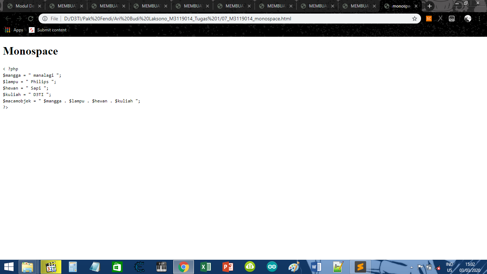

KODE PROGRAM
< ?php
$mangga = " manalagi ";
$lampu = " Philips ";
$hewan = " Sapi ";
$kuliah = " D3TI ";
$macamobjek = " $mangga . $lampu . $hewan . $kuliah ";
?>
SCREENSHOT

KESIMPULAN
Dari koding di atas, Dapat disimpulkan bahwa Monospaced font dapat digunakan untuk mempublish.
Kode yang digunakan dalam web tersebut dengan format font yang berbeda dari teks yang ditampilkan.
di web tersebut.
Kembali Ke Halaman Utama